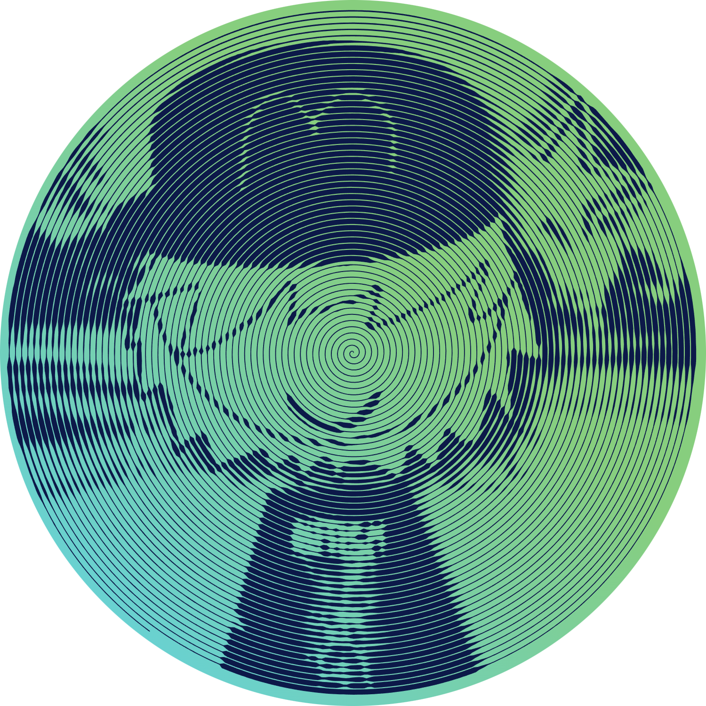

names lorenzo :D
he/him.
likes: pokemon,celsius, computers, music
dislikes: annoying ppl, not saving work, you! (jk)


")


------------
hello!
welcome to my website!!
my name is lorenzo (no shit) and i like to code, sleep, and do other stuff. it's 6:30 rn and i'm tired asf.
here you can find my blog, links, random stuff, and projects!!!

im so cool, heres why

here is where we get to intresting info im coming up with on the spot!
get to know me:
- autistic dumbass 🥹
- i really really like public transport
- i love firetrucks!!
- i live in brisbane wow
- hujagadafi
im so kewl 😎😎😎😎😎
status
join my webring!
the cool net webring is for people who think their site is awesome!
Just click the name of the webring on our widget, which you can find under webrings! I'll email you back with the code to add to your site!webrings!

stamps!
random


fanlistings


widgets!
poll of the month:
my time
days since website created
credits
template by NomnomNami!